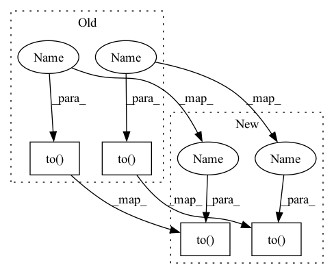

Pattern ID :2025

Before Change
self.rnn = [nn.LSTMCell(args["value_size_input"], args["hidden_size"]).to(self.device) for _ in range(args["num_units"])]
self.query = [nn.Linear(args["hidden_size"], args["key_size_input"] * args["num_input_heads"]).to(device) for _ in range(args["num_units"])]
self.query_ = [nn.Linear(args["hidden_size"], args["query_size_comm"] * args["num_comm_heads"]).to(self.device) for _ in range(args["num_units"])]
self.key_ = [nn.Linear(args["hidden_size"], args["key_size_comm"] * args["num_comm_heads"]).to(self.device) for _ in range(args["num_units"])]
self.value_ = [nn.Linear(args["hidden_size"], args["value_size_comm"] * args["num_comm_heads"]).to(self.device) for _ in range(args["num_units"])]
def transpose_for_scores(self, x, num_attention_heads, attention_head_size):
After Change
self.key_size = args["key_size_input"]
self.args = args
self.k = args["k"]
self.key = nn.Linear(args["input_size"], args["num_input_heads"] * args["query_size_input"]).to(self.device)
self.value = nn.Linear(args["input_size"], args["num_input_heads"] * args["value_size_input"]).to(self.device)
if self.rnn_cell == "GRU":
self.rnn = nn.ModuleList([nn.GRUCell(args["value_size_input"], args["hidden_size"]) for _ in range(args["num_units"])])
self.query = nn.ModuleList([nn.Linear(args["hidden_size"], args["key_size_input"] * args["num_input_heads"]) for _ in range(args["num_units"])])
In pattern: SUPERPATTERN
Frequency: 3
Non-data size: 4
Instances
Fragment ID: 4793544
Project Name: dido1998/recurrent-independent-mechanisms
Commit Name: bc15ade18e0de7129a778dffdf74bd218dda3607
Time: 2020-02-07
Author: adidolkar123@gmail.com
File Name: networks.py
Class Name: RIM
Method Name: __init__
Parent Class: nn.Module
Fragment ID: 4793547
Project Name: dido1998/recurrent-independent-mechanisms
Commit Name: bc15ade18e0de7129a778dffdf74bd218dda3607
Time: 2020-02-07
Author: adidolkar123@gmail.com
File Name: networks.py
Class Name: RIM
Method Name: __init__
Parent Class: nn.Module
Fragment ID: 4793549
Project Name: gml16/rl-medical
Commit Name: a7aa4702050819ab83f9ad27fcfad2cfada3f306
Time: 2020-05-15
Author: g.m.leroy@outlook.com
File Name: examples/LandmarkDetection/DQN/DQNModel.py
Class Name: CommNet
Method Name: __init__
Parent Class: nn.Module
Fragment ID: 4793539
Project Name: median-research-group/libmtl
Commit Name: 989b1599892d966704ad2b4081a5f4477997b9bc
Time: 2021-12-29
Author: bj.lin.email@gmail.com
File Name: LibMTL/architecture/MTAN.py
Class Name: _transform_resnet_MTAN
Method Name: __init__
Parent Class: nn.Module